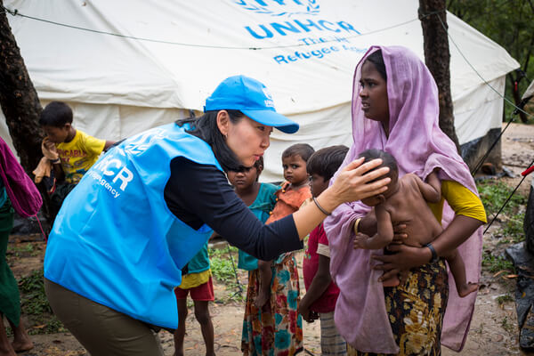

Nossos projetos
O Instituto Novo Caminho desenvolve projetos voltados à educação, inclusão e desenvolvimento social. Nossas ações são realizadas com o apoio de voluntários e parceiros da comunidade.
- Projeto 1: Reforço Escolar
- Aulas de apoio para crianças e adolescentes, com atividades de leitura, matemática e acompanhamento escolar.
- Projeto 2: Oficinas de Capacitação
- Oficinas gratuitas que ajudam jovens e adultos a desenvolver conhecimentos e habilidades para o mercado de trabalho.
- Projeto 3: Inclusão Digital
- Atividades de informática e tecnologia para pessoas que possuem pouco acesso a recursos digitais.
Seja um voluntário
Você pode contribuir com seu tempo, conhecimento e habilidades. O Instituto Novo Caminho recebe voluntários para auxiliar nas atividades educativas, oficinas e eventos realizados pela organização.
Como participar:
- Preencha o cadastro de voluntariado.
- Aguarde o contato da nossa equipe.
- Escolha uma atividade de acordo com sua disponibilidade e habilidades.
Faça uma doação
Sua contribuição ajuda a manter nossas atividades e ampliar o alcance dos projetos do Instituto Novo Caminho. Toda doação é destinada à manutenção das ações sociais e à aquisição de materiais utilizados nas atividades.
Formas de contribuição:
- Doação financeira
- Doação de materiais escolares
- Doação de equipamentos de informática
Contato para doações:
E-mail: doacoes@institutonovocaminho.org.br
Telefone: (11) 3456-7890